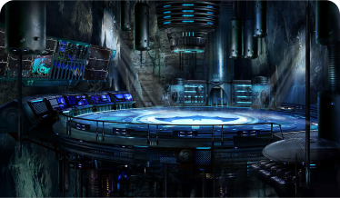
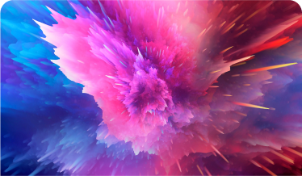

Bruce Wayne é o único personagem a se identificar como Batman e aparece em Batman, Detective Comics, Batman e Robin e Batman: O Cavaleiro das Trevas. Dick Grayson retorna ao manto de Asa Noturna




Arlequina
A criação de Arlequina foi uma ideia de última hora proposta pelo escritor americano Paul Dini para modificar uma cena do vigésimo segundo episódio de Batman: The Animated Series.